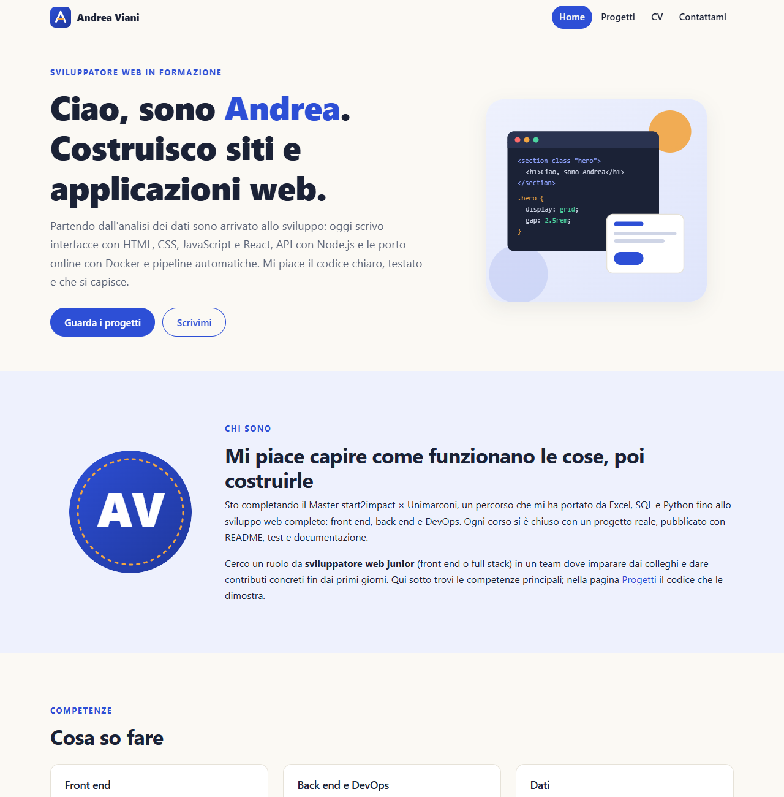
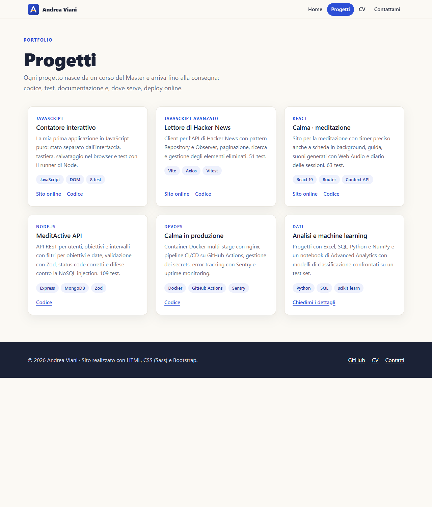
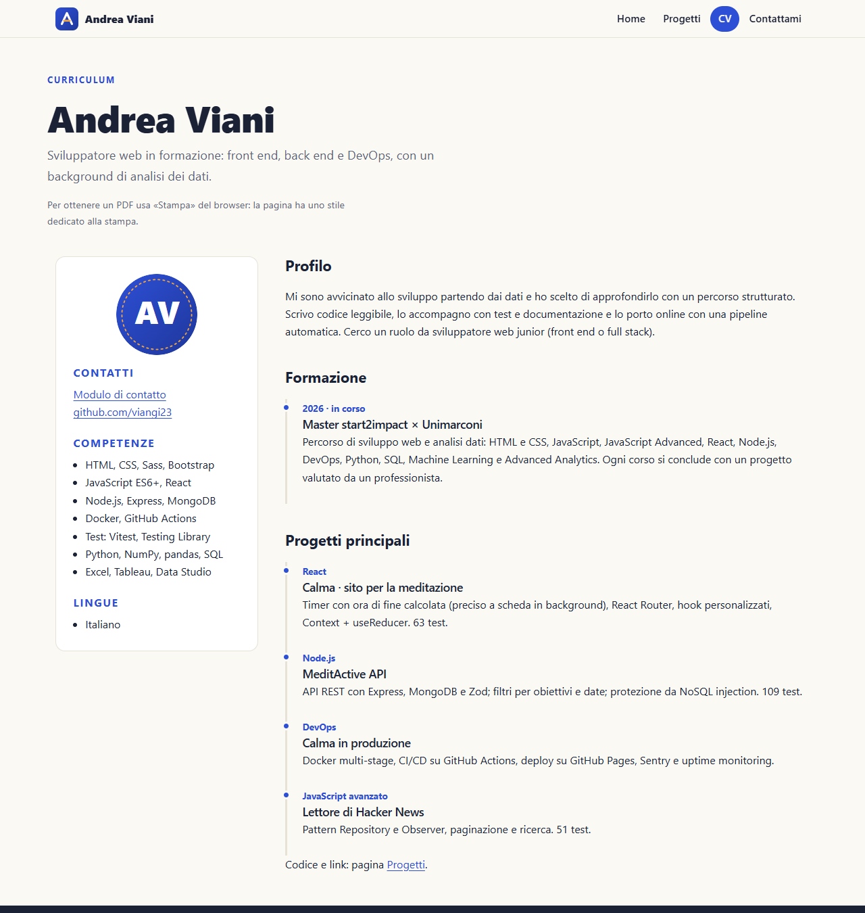
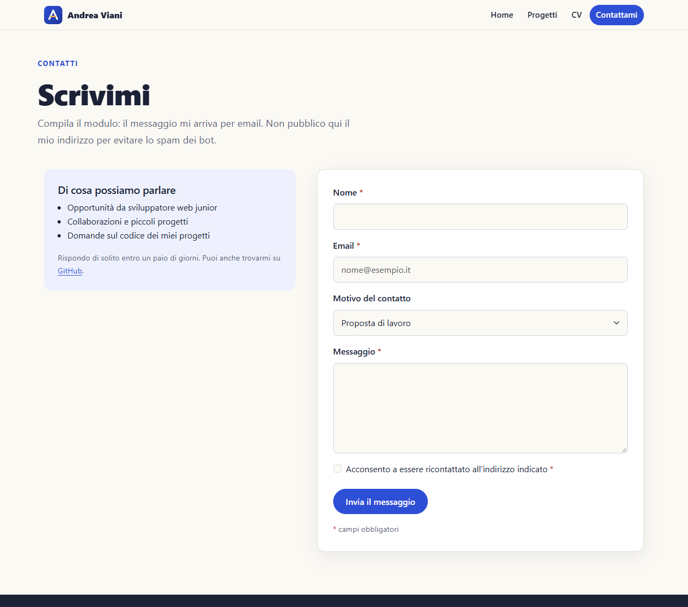
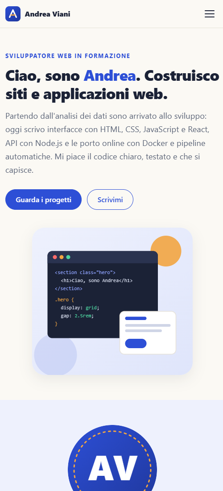
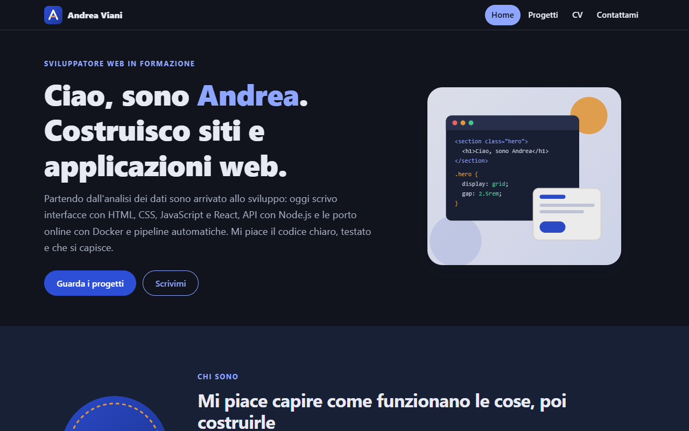
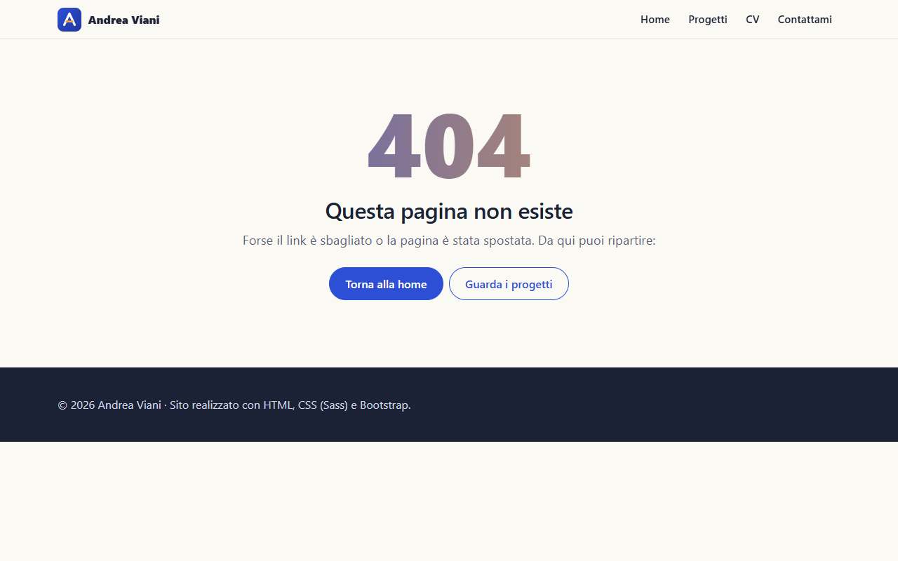

Portfolio in HTML e CSS con Sass e Bootstrap: home, progetti, CV e modulo di contatto
Andrea Viani
🔗 Repository GitHub: https://github.com/viangi23/progetto-html-css-portfolio
🌐 Sito online: https://viangi23.github.io/progetto-html-css-portfolio/
A chi recluta o cerca uno sviluppatore web: in pochi secondi deve capire chi sono, cosa so fare e come contattarmi. Il pulsante «Scrivimi» e il menu sono sempre a portata di mano.
| Requisito | Soluzione |
|---|---|
| Solo HTML e CSS | nessun JavaScript, nemmeno quello di Bootstrap |
| CV in HTML + pagina contatti con form | cv.html, contattami.html |
| Framework front end | Bootstrap 5 (griglia, form, utility) |
| Favicon | favicon.svg |
| Menu sticky | sticky-top su ogni schermo; su mobile menu «hamburger» solo CSS NUOVO |
| Flexbox / Grid | Grid per le sezioni, Flexbox per menu, footer e card |
| Sass | scss/ → css/style.css |
| 100% responsive | mobile-first, nessuno scroll orizzontale a 320, 375, 550, 800 e 1280 px |
Open Graph, form con required | in ogni pagina; validazione del browser attiva |
| GitHub Pages | pubblicazione dal ramo main |

clamp().



required, type="email", minlength, etichette collegate:user-invalid) NUOVO

<input class="nav-toggle" type="checkbox" id="menu-toggle">
<label class="nav-toggle__btn" for="menu-toggle">…</label>
<nav id="menu-principale">…</nav>
@media (max-width: ($bp-sm - 1px)) {
.site-nav nav { display: none; }
.nav-toggle:checked ~ nav { display: block; }
}
La casella è invisibile ma resta raggiungibile da tastiera; le tre linee del pulsante diventano una X quando il menu è aperto.
@media (prefers-color-scheme: dark) {
:root {
--ink: #{$ink-dark};
--paper: #{$paper-dark};
--brand: #{$brand-on-dark}; // blu schiarito
--bs-link-color-rgb: 142, 166, 255;
}
}
Tutti i componenti usano già le variabili, quindi basta ridefinirle. In stampa il CV torna sempre chiaro.
scss/
_variables.scss colori (chiari e scuri), misure,
breakpoint, mixin
_base.scss custom properties, tema scuro,
tipografia, focus
_layout.scss menu sticky e hamburger, hero (Grid),
animazioni, footer, 404
_components.scss card, skill, timeline, CV, form
main.scss @use di tutti i partial
npm run sass → css/style.css
Variabili e mixin tengono il tema in un solo posto (@include up($bp-md)); annidamento e partial rendono i file piccoli e leggibili. Le variabili diventano custom properties CSS e ridefiniscono i colori di Bootstrap.
Uso griglia, form, utility e sticky-top; il file è in css/vendor/, quindi nessun CDN. Il mio Sass sovrascrive colori, link e pulsanti.
header, nav, main, section, aside)aria-current, focus visibile, alt ovunque, aiuti dei campi collegati con aria-describedbyprefers-reduced-motion e prefers-color-scheme rispettatihtml-validate e controllo automatico di link e ancore: 0 problemiRepository GitHub: https://github.com/viangi23/progetto-html-css-portfolio
Sito online (GitHub Pages): https://viangi23.github.io/progetto-html-css-portfolio/